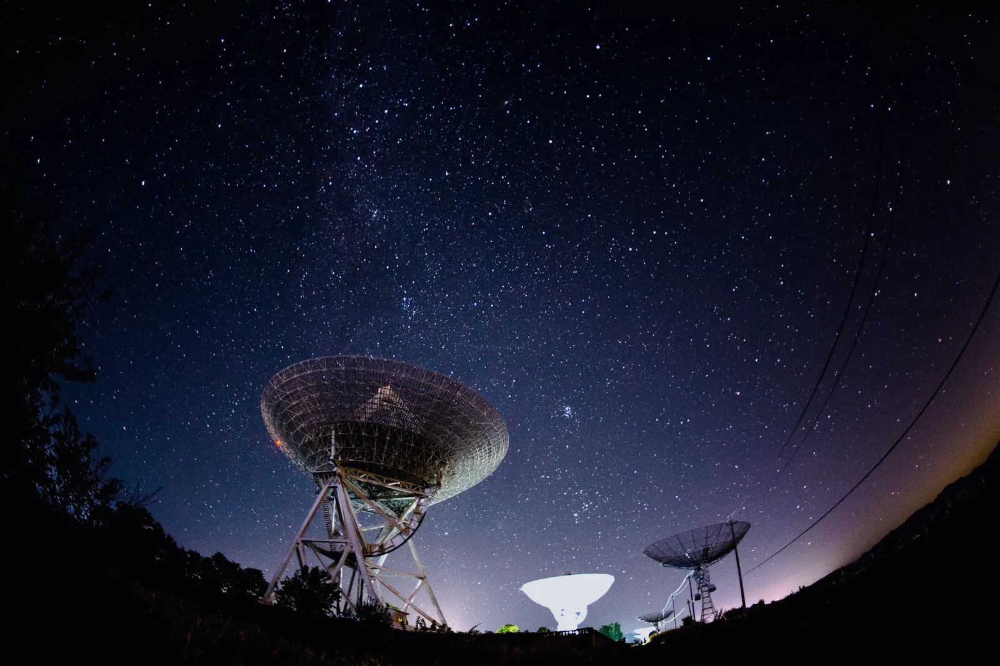

The observatory
Research
A 1.2 metre telescope is not going to compete with Paranal, and we do not try. It competes on the one thing large telescopes cannot buy: time. We can watch the same star every clear night for fifteen years.
The Fell Telescope
| Configuration | Ritchey–Chrétien, f/8 |
|---|---|
| Aperture | 1.20 m |
| Focal length | 9.60 m |
| Mount | Alt-azimuth, direct drive |
| Pointing | 2.1″ RMS all-sky |
| Tracking | 0.3″ over 10 min unguided |
| Camera | 4k×4k back-illuminated CMOS, 9 µm |
| Field | 13.2′ × 13.2′ |
| Filters | Sloan u′g′r′i′z′, plus Hα and a clear |
| Median seeing | 1.4″ |
| Faintest useful | 21.8 mag in 300 s (r′) |
| Commissioned | 2019 |

Three things we do properly
A small observatory has to choose. These are the three where a fifteen-year baseline from one site beats a night on a bigger instrument.
Long-baseline photometry
417 variable stars monitored since 2011, most of them eclipsing binaries and long-period variables too bright for the big surveys and too faint for amateurs.
Period changes on the order of seconds a decade are only measurable if somebody keeps looking, and almost nobody is funded to keep looking.
The plate archive
11,400 glass plates from 1912 to 1987, of which 4,117 are digitised so far at 2,400 dpi with photometric calibration.
A digitised plate extends a light curve back a century. Three of the stars on the current programme were flagged because their 1930s brightness disagrees with their modern one.
Sky brightness
Zenith sky brightness measured every clear night since 1998, now 6,830 nights of record. The current median is 21.7 magnitudes per square arcsecond.
It has degraded by 0.11 magnitudes in that time — slower than the national trend, which is the entire argument for the lighting work we do with the parishes.

Data, and who can have it
Everything the observatory produces is public. Reduced light curves, the digitised plates, the full sky-brightness series, and the raw frames on request — all without an account, an embargo or a data-sharing agreement.
We ask for a citation and nothing else. Several of the school groups on our Variable Stars day have ended up as named contributors, which is exactly what an archive like this is for.
Seeing the season honestly
Between 10 May and 2 August there is no astronomical darkness here, so the deep-sky programme stops for eighty-five nights. That time goes to solar work: full-disc hydrogen-alpha, prominence measurement and the sunspot count the observatory has kept without a gap since 1963.
The gap in the deep-sky data is real and it is visible in every light curve we publish. We would rather it were obvious than smoothed over.